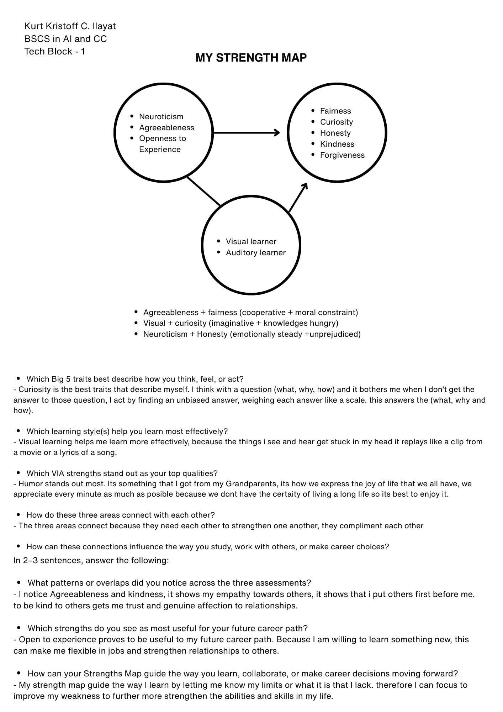
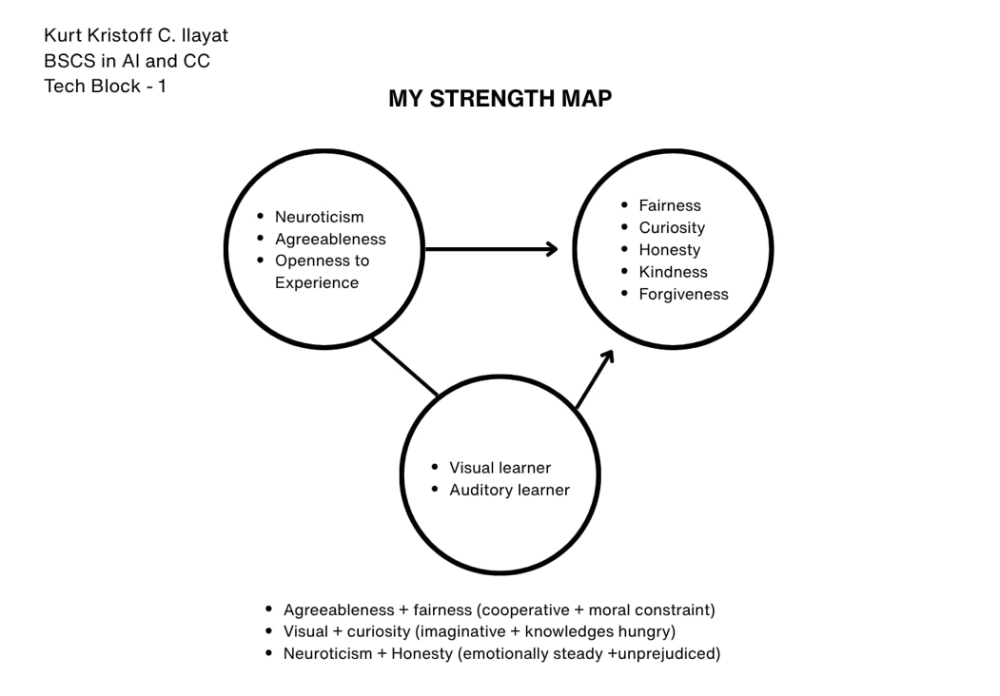
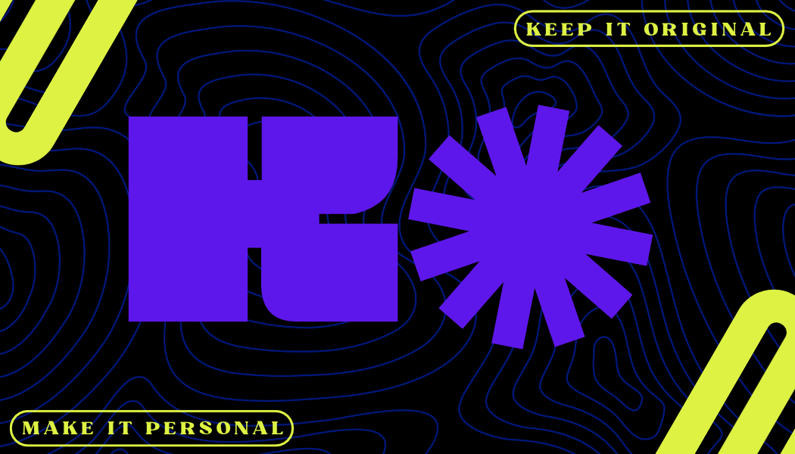

MY STRENGTHS MAP
Understanding my strengths.
Exploring my personality, values, and learning preferences to understand how they influence my choices.
View strengths map
Curiosity in mind.
Passion in heart.
THE PERSON BEHIND THE WORK

I'm Kurt Kristoff C. Ilayat, a Computer Science student in CIIT College of Innovation and Integrated Technology interested in programming and web design. I am developing my skills through practice and projects like this portfolio.
I enjoy asking what, why, and how. My Strengths Map helped me recognize my curiosity, kindness, honesty, and openness to experience. I connect with ideas through what I see and hear, and I value humor and fairness when working with others.
PLANS, REFLECTIONS & CREATIVE OUTPUTS
Getting to know myself.
Putting what I learn into practice.

MY STRENGTHS MAP
Exploring my personality, values, and learning preferences to understand how they influence my choices.
View strengths map
PERSONAL BRANDING
My personal brand combines problem-solving, programming, and web design. The black, purple, blue, and neon-yellow design reflects my creativity and interest in creating original, functional, and user-friendly digital projects.
View business card PDFCAREER PLANNING
My career exploration includes analytics engineering and fleet management engineering. My gap analysis and SMART goals identify the skills and experience I still need.
View career goalsTIME & STRESS MANAGEMENT
Prioritizing tasks, planning smaller steps, and setting reminders. Music, walks, and rest are part of my plan for handling stress.
View development planCONFLICT MANAGEMENT
My second development plan explores how I handle conflict and communicate with others.
SELF-INTRODUCTION
My self-development activity adds another perspective to my identity, interests, and personal journey.
View activityI am Kurt Kristoff C. Ilayat, In my language I am called C. Ilayat Intagbat (meaning can deliver hard). Pag kailangan niyo ako laging papasa kasi kapag hindi, tulog ka sa kalsada. Therefore failure is not an option the answer is my solution.
A WORK IN PROGRESS
KNOW MYSELF
My Strengths Map helps me recognize what I do well and where I need to improve. Curiosity encourages me to ask questions and explore new ideas.
BUILD BETTER HABITS
My development plans focus on breaking tasks into smaller steps, managing deadlines, making time for rest, and communicating more effectively.
LOOK AHEAD
My programming goal is to complete projects in Java, and C/C++, alongside two SQL and database projects, within the next three years.
MY COMMITMENT
Stay curious.
Keep practicing.
Make the work my own.
LET'S CONNECT
Interested in my work or learning alongside me?
kurtkristoff14@gmail.com
Kurt Kristoff C. Ilayat
Computer Science · CIIT · IR001 - 11